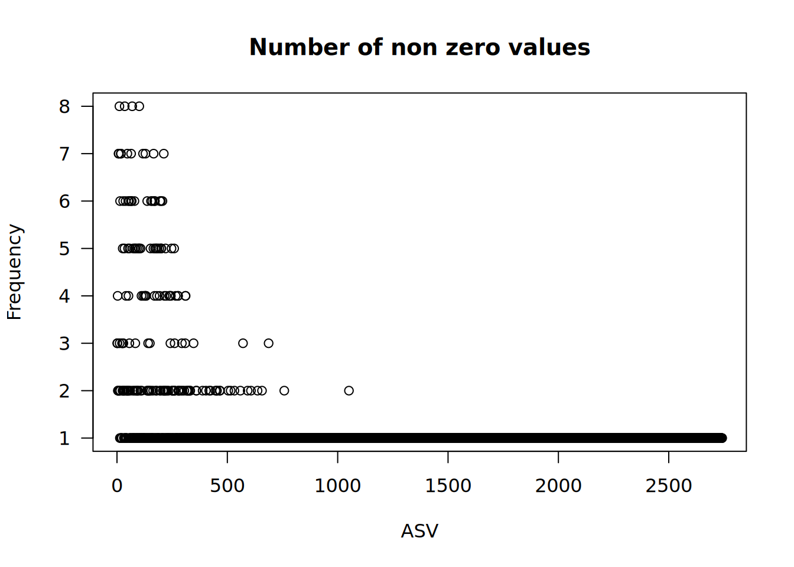
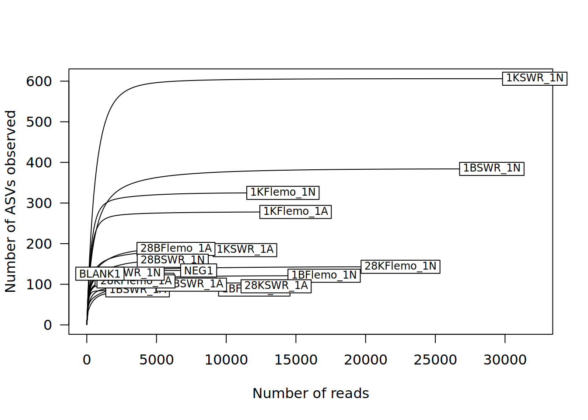

library(tidyverse)
library(vegan)
#change this path to match your folder's location
setwd("/Users/myname/folder1/subfolder2/MicrobiomeAnalysisWorkshop")
#check your working directory location
getwd()
#import our ASV, taxa, and metadata tables
asv_count.data <- read.table(file="asv_count_table.txt", sep = " ", header = TRUE,
quote = "\"", check.names = FALSE, stringsAsFactors = FALSE)
taxa.data <- read.table(file = "taxonomy_table.txt", sep = " ", header = TRUE,
quote = "\"", check.names = FALSE, stringsAsFactors = FALSE)
meta.data <- read.csv("sample_metadata.csv")Data exploration, normalization, & quality control
Overview
So far, we have created two data tables using the DADA2 pipeline:
An amplicon sequence variant (ASV) count table (
asv_count.data) which records the numbers of times each exact amplicon sequence variant was observed in each sample.A taxonomy table (
taxa.data) which records the taxonomic assignments for each ASV.
We’ll also be working with a metadata table (meta.data) which represents metadata information for the different samples.
In this session, we will:
*Examine these data tables.
Perform necessary quality control checks (e.g., sparsity and sequencing depth).
Filter & normalize our data.
Learning objectives
By the end of today’s session, you should be able to:
Examine and interpret the key features of ASV datasets.
Evaluate the quality of ASV datasets.
Perform data manipulation for quality control (and determine when this is appropriate).
Exploring our data
Examining the sample metadata
Load the required packages and objects:
Examine the metadata object:
#check the first few rows of the data
head(meta.data)
#we can also use the glimpse() function to see an overview & the data types
glimpse(meta.data)
#check the number of samples
dim(meta.data)[1]
#check the number of variables
dim(meta.data)[2]
Stop & think
Most datasets will have have multiple variables with an underlying experimental design. What would be your first idea to analyze this data?
We will remove the metadata for the controls (BLANK1 and NEG2), as we do not want to visualize these downstream.
#using the filter() function to remove rows that have 'Control' values
filtered_meta.data <- meta.data %>% filter(Inoculant_Source != "Control")Examining the taxa table
The taxonomy table (taxa.data) represents the assignment for the different ASVs at domain, phylum, class, order, family, genus and species levels.
Checking the dimensions
#check the first few rows of the data
head(taxa.data)
#make the rownames a column called 'FASTA'
taxa.data$FASTA <- rownames(taxa.data)
#set the ASV IDs as row names
rownames(taxa.data) <- taxa.data[,1]
#delete the ASV ID column
taxa.data <- taxa.data[,-c(1,1)]
#check the first few rows of our modified data
head(taxa.data)
#check the number of ASVs
dim(taxa.data)[1]Filtering out unwanted ASVs
First, we will remove unwanted classifications or ASVs. This includes:
Unclassified sequences (with no taxonomy data).
Archaeal sequences.
Mitochondrial sequence contamination.
Chloroplastic sequence contamination (particularly when sampling microbiomes associated with plants).
Stop & think
The code below should remove ASVs classified as coming from chloroplasts and mitochondria. These reads can show up in our 16S sequencing data because environmental samples can have DNA from non-microbial organisms, such as plant roots, leaves, or eukaryotic tissue.
16S rRNA amplicon sequencing amplifies DNA from chloroplasts and mitochondria because these organelles evolved from prokaryotic organisms (see: the endosymbiosis theory).
The highly conserved regions of 16S serve as consistent targets for sequencing, but they are also highly conserved in non-target organelles, so we must filter out off-target kingdoms of life.
How do we make sure reads were reasonably removed?
#defining a list of unclassified ASVs
unclassified.ASVs <- subset(taxa.data, is.na(Phylum))
#check the first few rows of the data
head(unclassified.ASVs)
#defining a list of archaeal ASVs
archaea.ASVs <- subset(taxa.data, Kingdom == "Archaea")
#defining a list of mitochondrial ASVs
mitochondria.ASVs <- subset(taxa.data, Family == "Mitochondria")
#defining a list of chloroplastic ASVs
chloroplast.ASVs <- subset(taxa.data, Order == "Chloroplast")
#create a list of ASVs to remove from the taxonomy table
ASVs_to_remove <- list(
rownames(archaea.ASVs),
rownames(unclassified.ASVs),
rownames(chloroplast.ASVs),
rownames(mitochondria.ASVs)
) %>% reduce(union)
#check which ASVs will be removed
ASVs_to_remove
#remove row names (i.e., ASVs) that are listed in ASVs_to_remove, creating a filtered taxonomy table
filtered_taxa.data <- taxa.data[-which(rownames(taxa.data) %in% ASVs_to_remove),]
#check the number of ASVs
dim(filtered_taxa.data)[1]Now we have a filtered taxonomy table (filtered_taxa.data) that we have removed unwanted ASVs from.
Check the dimensions of the filtered taxonomy table:
#check the first few rows of the data
head(filtered_taxa.data)
#check the last few rows of the data
tail(filtered_taxa.data)
#check the number of ASVS
dim(filtered_taxa.data)[1]Examining the ASV table
The ASV table (asv_count.data) is the abundance table that contains counts corresponding to the number of times each ASV is observed in each sample.
Checking dimensions
The ASV table has samples in rows and variables (ASVs) in columns.
Check the first few rows of the ASV table:
#check the first few rows of the ASV table
head(asv_count.data)
#check the last few rows of the ASV table
tail(asv_count.data)Check the number of ASVs:
#check the number of samples (i.e., rows) in the ASV table
dim(asv_count.data)[1]
#check the number of ASVs (i.e., columns) in the ASV table
dim(asv_count.data)[2]
#check the total number of sequences/reads in the ASV table
sum(asv_count.data)
#check the minimum number of counts for an ASV
min(colSums(asv_count.data))
#check the maximum number of counts for an ASV
max(colSums(asv_count.data))
#check the total number of ASVs per sample
rowSums(asv_count.data)Filtering out unwanted ASVs
We have already filtered out unwanted classifications and ASVs from the taxonomy table to create filtered_taxa.data. Next, we’ll update the ASV table to match by remvoving the same unwanted ASVs.
#keep ASV columns from the ASV table that match the row names in the filtered taxa table
filtered_asv_count.data <- asv_count.data[,which(colnames(asv_count.data) %in% rownames(filtered_taxa.data))]Check the dimensions of the filtered taxonomy table:
#check the first few rows of the data
head(filtered_asv_count.data)
#check the total number of sequences/reads in the ASV table
sum(filtered_asv_count.data)
#check the number of samples (i.e., rows) in the ASV table
nb_samples <- dim(filtered_asv_count.data)[1]
#check the number of ASVs (i.e., columns) in the ASV table
nb_var <- dim(filtered_asv_count.data)[2]
Stop & think
How have the dimensions of our data object changed after filtering?
Checking sparsity
Microbiome datasets are usually sparse and have an uneven library size.
Check the number of zeros & percentage of zeros in the ASV table:
#sum the number of zeros in the ASV table
num_zeros <- sum(filtered_asv_count.data == 0)
#report the number of zeros in the ASV table
print(paste0("Number of zeros in the ASV table = ",num_zeros))[1] "Number of zeros in the ASV table = 47440"#calculate the percentage of zeros in the ASV table
percent_zeros <- sum(filtered_asv_count.data == 0) / (nb_var * nb_samples) * 100
#report the the percentages of zeros in the ASV table to 3 significant figures with the signif() function
print(paste0("Percentage of zeros in the ASV table = ", signif(percent_zeros,3),"%"))[1] "Percentage of zeros in the ASV table = 93.4%"
Stop & think
What is the meaning of a zero value in an ASV table?
Can we consider it to be a true zero?
Do you think it is important to filter the data and why?
Answers
A zero value in the ASV table means that we could not sequence any read for a specific ASV in a given sample. This means that the ASV is not present in the given sample, or that the sequencing depth was not enough to find it.
Because of this, we usually don’t know if it is a true zero or not.
The issue of whether something is truly absent (or not) is problematic, especially when we have to compare rare ASVs. Furthermore, some statistical approaches cannot handle highly sparse data set (e.g., Principal Component Analysis). For microbiome data analysis, zeros values can be difficult to analyse and interpret and data should be filtered if the percentage of zeros is relatively high.
Considerations for your own data
- Microbial ecologists usually remove singletons (ASVs for which only one read has been identified in the full ASV table), as these are likely to be artifacts.
- Be aware that some diversity metrics take these singletons into account, so you might not always want to remove them (e.g., Chao1 alpha diversity).
- Another option for data filtering could be to remove ASVs that have a total count (per ASV, over all samples) lower than a defined value.
- As a reminder, chimeric amplification products have been already removed in DADA2 pipeline.
Plot the ASV occurrence frequency as a histogram:
#plot frequency as a histogram
hist(as.matrix(filtered_asv_count.data),
max(filtered_asv_count.data),
right = FALSE,
las = 1,
xlab = "Occurrence value",
ylab = "Frequency",
main = "Occurrence frequency") 
Check how frequently ASVs are shared between samples:
non_zero <- 0*1:nb_var
for (i in 1:nb_var){
non_zero[i]<-sum(filtered_asv_count.data[,i] != 0)
}
plot(non_zero, xlab = "ASV", ylab = "Frequency", main = "Number of non zero values", las = 1)
It is likely that the majority of ASVs are found only in a few samples. In other words, very few ASVs will be found at high frequencies or across all samples.
Considerations for your own data
If you have replicate samples, you could think about filtering out rare ASVs that are not shared between at least 2 or 3 samples.
Checking the sequencing depth
Sequencing depth and library size represent the number of counts per sample. This number can vary a lot among the different samples (up to 10-fold).
Differences in library size can be due to technical biases or errors introduced when creating DNA sequencing libraries in the lab:
The PCR amplification step can introduce some difference among samples because PCR amplification can be more orless efficient according to the sequence itself.
After cleaning up PCR amplicons from each sample, we typically measure the DNA concentration. Depending on the method used (e.g., band brightness, NanoDrop, Qubit), this may not be a highly accurate or sensitive measure.
Then, according to these concentrations, we pool the different samples into one ‘equimolar’ mix, which can also introduce some error.
Stop & think
Why do you think it is important to look at sequencing depth?
Answers
- It is important to know if we sequenced enough to capture all the diversity present in our environment.
- To compare samples to each other, we need to have a comparable library size between samples.
Checking library size
Check the number of ASV counts per sample:
#calculate the number of counts per sample
library_size <- rowSums(filtered_asv_count.data)
summary(library_size)
#check if any samples have zero counts
library_size[library_size == 0]
#plot the number of counts per sample as a histogram
plot(library_size, ylim=c(0,25000), main=c("Number of counts per sample"), xlab=c("Samples"))
#check the minimum library size
min(library_size)
#check the maximum library size
max(library_size)Removing negative controls (by row) and re-checking library size:
#check library size AFTER removing negative controls
controls_removed_filtered_asv_count.data <- filtered_asv_count.data[-c(17,18),]
controls_removed_library_size <- rowSums(controls_removed_filtered_asv_count.data)
min(controls_removed_library_size)
max(controls_removed_library_size)
Considerations for your own data
Do your samples have differences in the library size? If you want to compare samples to each other (hint: you do), it will be an issue to have different library sizes. To fix this, we will normalize our library sizes.
If any of your samples have no counts at all, they should be removed from analysis.
Normalizing abundance data
Checking the rarefaction curve
We can explore sequencing depth though a rarefaction curve. The rarefaction curve shows how many new ASVs are observed when we obtain new reads for a given sample - essentially visualizing ASV richness across sampling depths.
rarecurve(controls_removed_filtered_asv_count.data, step = 100, cex = 0.75, las = 1,
xlab="Number of reads", ylab = "Number of ASVs observed") Warning in rarecurve(controls_removed_filtered_asv_count.data, step = 100, :
most observed count data have counts 1, but smallest count is 2
The key to interpreting these curves is to identify where ASV richness plateaus. If the sequencing depth is sufficient, we should observe a plateau. This means that even if we sequence new reads from that sample, they will belong to ASVs already observed. In other word, all the diversity present in a sample is already captured and we have sequenced the community deeply enough.
The sequencing depth at which ASV richness plateaus can serve as the cut-of point for normalization. This allows us to retain the maximum amount of ASV diversity, while creating even sequence depth across samples for downstream processing. Rarefying is ideal for beta diversity analyses.
Note: we cannot use rarefaction curves to estimate total richness of a sample - we primarily look at these as a general data vibe check.
Considerations for your own data
Do your samples reach a plateau? Does the total number of reads vary between samples?
Rarefying the abundance data
#set.seed() is a 'pseudo'-random number generator
#this ensures your code is reproducible so you can repeat
#this rarefaction process identically each time the code is run
set.seed(137)
#check many samples have above 500 reads
sum(library_size >= 500)
#create a rarefied ASV table
rarefied_filtered_asv_count.data <- rrarefy(controls_removed_filtered_asv_count.data,500)
#check which samples were not rarefied
which(rowSums(controls_removed_filtered_asv_count.data) < 500) Calculating the relative abundance of counts
Relative abundance is another normalization method. This step processes data as a proportion.
#convert ASV counts to percentages to calculate relative abundance
asv_percent.data <-rarefied_filtered_asv_count.data/rowSums(rarefied_filtered_asv_count.data)*100
#check how the data has changed
rowSums(asv_percent.data)
#convert object to dataframe
asv_percent.df <- as.data.frame(asv_percent.data)
#the t() function transposes the data so the samples (i.e., rows) become the columns
asv_relative_abundance.data <- as.data.frame(t(asv_percent.df))
#have a look at our new dataframe
head(asv_relative_abundance.data)End products
From our ‘raw’ data tables, we have produced the following end products:
- A metadata table
filtered_meta.datawhich has had controls removed.
An amplicon sequence variant (ASV) count table (
rarefied_filtered_asv_count.data) which has:Been filtered to remove unwanted ASVs
Had negative controls removed
Been normalized to rarefy samples
An amplicon sequence variant (ASV) count table (
asv_relative_abundance.data) which has:Been filtered to remove unwanted ASVs
Had negative controls removed
Been normalized to rarefy samples
Had counts converted to relative abundance (%)
A taxonomy table (
filtered_taxa.data) which has been filtered to remove unwanted ASVs
The most important thing to do at this stage is to save and export our data so we can analyze it later.
#export filtered metadata to a file
write.table(filtered_meta.data, file="filtered_sample_metadata.txt")
#export rarefied ASV table to a file
write.table(rarefied_filtered_asv_count.data, file="rarefied_filtered_asv_abundance_table.txt")
#export relative abundance ASV table to a file
write.table(asv_relative_abundance.data, file="relative_rarefied_filtered_asv_abundance_table.txt")
# Export filtered taxonomy file to a file
write.table(filtered_taxa.data, file = "filtered_taxonomy_table.txt")